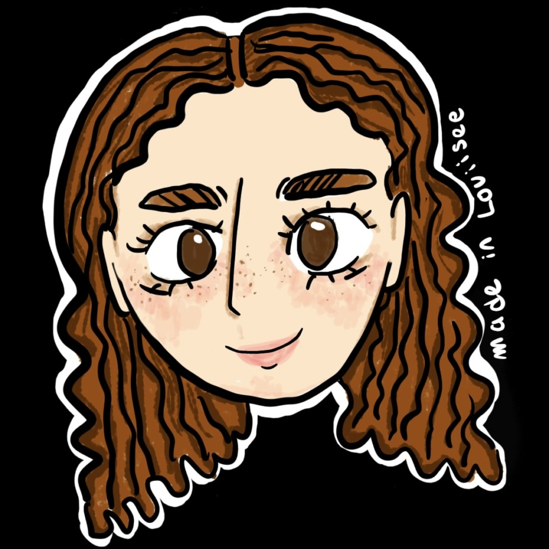
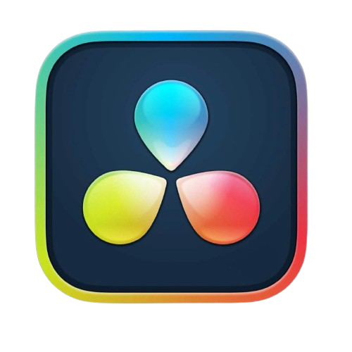
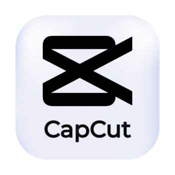
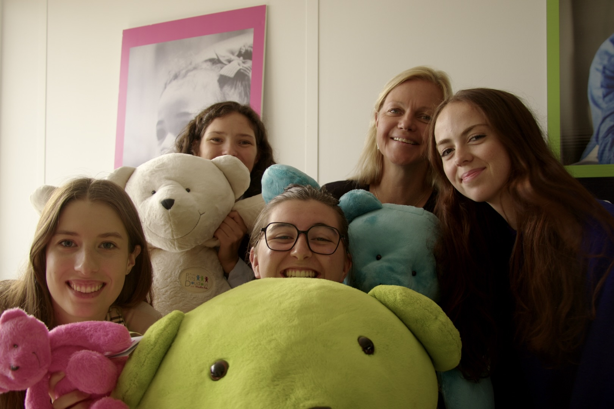
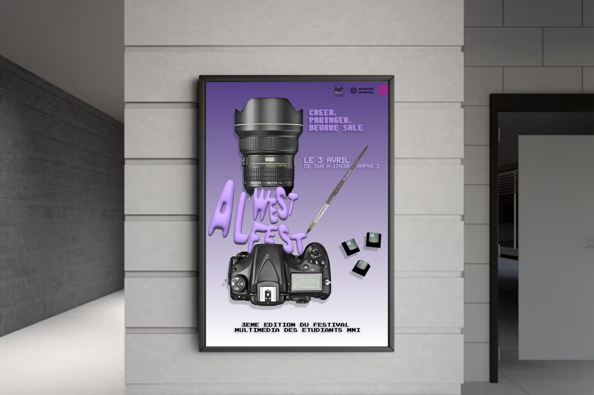
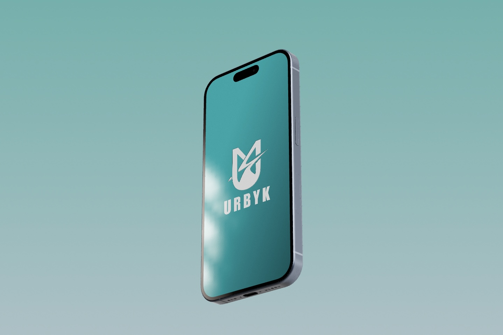
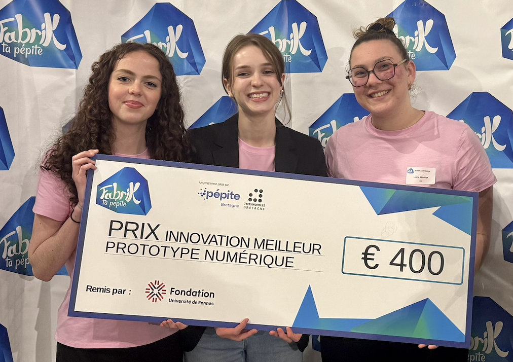

AXELLE APPAMON
Portfolio
A Propos
Moi c’est Axelle !
Ce qui me plait ?
Imaginer, créer,
filmer, choisir la bonne
musique
puis
passer ma journée à
monter.
Que ce soit à Saint-Malo, là où j’ai grandi
entre la mer et les
remparts,
ou
ailleurs, j’ai
toujours une caméra ou un appareil photo à portée de main, prête à capturer de
nouveaux
souvenirs.
Je suis passionnée par le cinéma et les jeux
vidéo. Ceux-ci me
servent
d’inspiration dans mes
projets.
J’aime les jeux d’histoires ; ceux qui font réfléchir, avec de beaux
graphismes et
une
bande son qu’on s’empresse d’ajouter à sa playlist une fois celui-ci terminé.
Je suis calme, fiable et organisée, j’aime
comprendre ce que je
fais
et
aller
au bout de mes
projets. La pratique des sports de combat et des arts
martiaux
(kickboxing
et karaté) m’a appris
discipline, rigueur
et persévérance, des qualités qui m’accompagnent autant dans ma vie
personnelle
que
dans mes
projets professionnels.
J’aime l’inconnu, quand il y a quelque chose que je ne connais pas sur la carte d’un
restaurant
je le prends directement ! C’est un peu comme ça que je vois ma façon de découvrir
tout
ce
qui
m’entoure.
Actuellement en deuxième année de BUT Métiers du
Multimédia et de l’Internet
à
Lannion, je
souhaite poursuivre dans communication
audiovisuelle, m’investir
dans
des
projets qui me
permettent d’évoluer et de continuer à développer mon propre univers créatif.
Je vous invite donc à découvrir mes projets et créations à travers ce portfolio
!
Discipline
Dynamisme

Autonomie
Empathie
Responsabilité
Formations
BACHELOR UNIVERSITAIRE DE TECHNOLOGIE
Métiers du Multimédia et de l’Internet (2025-2028)
IUT de Lannion (22) - Université de Rennes
Audiovisuel, Communication, Design de service, UX/UI design, graphisme,
communication,
marketing, gestion de projet, développement web
LICENCE 1 DROIT
Obtention du premier semestre avant réorientation (2024-2025)
Faculté de Rennes 1 (35) - Université de Rennes
Droit constitutionnel, Droit des personnes, Organisations européennes, Histoire
des
Institutions publiques, Sciences politiques, Introduction au droit et
organisation
juridictionnelle
BACCALAUREAT SERIE GENERALE
Mention très bien (2023-2024)
Lycée Jacques Cartier (35) - St Malo
Spécialités Histoire-Géographie Géopolitique, Sciences Politiques (HGGSP) et
Sciences
Economiques et Sociales (SES)
Compétences

Audiovisuel
- Création de projets audiovisuels de A à Z
- Utilisation technique de matériel audiovisuel
- Montage vidéo (DaVinci Resolve, Capcut)
- Réalisation de photos dans le cadre personnel



Communication
- Gestion des réseaux sociaux, stratégie de contenus, création de contenus
- Maîtrise des principaux logiciels bureautiques (traitement de
texte et de présentation : OpenOffice, Canva, Google docs...)


Marketing
- Etablir une stratégie de communication
- Réalisation SWOT/PESTEL
- Réalisation d'audit de contexte, d'audit économique, d'audit ergonomique,
d'audit sémiotique


Design Graphique
- Entretien d'un carnet de veilles graphiques
- Réalisation d'affiches (Adobe Illustrator, Photoshop)
- Réalisation de moodboards, d'infographies
- Conception de wireframes et de maquettes de sites web


Gestion de projet
- Réalisation de cahiers des charges
- Planification (Gantt)
- Gestion de budget
- Méthodes d'agilité (Scrum, Kanban)

Projets

Réalisation d'une interview vidéo pour une initiative locale
Association "Les Ptits Doudous"
Le but était de présenter une initiative locale, nous avons choisi "Les Petits Doudous" située à Rennes, en réalisant une interview permettant de présenter ses missions, ses valeurs et son engagement. Dans le cadre de ce projet, j’ai assuré toute la prise de vue à l’aide d’une caméra Blackmagic, ainsi que le montage vidéo sur Adobe Premiere Pro. Cette expérience m’a permis de travailler sur la réalisation audiovisuelle, de soigner la qualité des images et de construire un montage cohérent.

Stratégie de communication numérique du festival MMI “A l’West Fest”
Réalisation de supports de communication
"A l’West Fest" est un festival organisé par la filière MMI. Pour la communication de ce festival j’ai réalisé une charte graphique, un mail pour démarcher un partenaire, la rédaction d’un communiqué de presse, d'un planning d’actions pour structurer la communication, de plusieurs prototypes de supports de communication (mini bande-annonce vidéo, un prototype de post Instagram décliné en plusieurs visuels et une affiche promotionnelle).

Développement de l'application URBYK et gestion de sa communication
Co-fondatrice de l'application (projet personnel)
L'objectif de l'application est de favoriser la marche en transformant les balades en exploration grâce à un système de brouillard de guerre qui dévoile la carte au fil des déplacements. J’ai participé au développement de la version alpha de l’application avec Flutter et je travaille actuellement sur la version bêta. Je m'occupe également de la communication du projet, notamment la création et la gestion de contenus LinkedIn pour faire connaître Urbyk et partager son évolution (et instagram prochainement).

Fabrik Ta Pépite : "Lexi" Jeu mobile éducatif pour enfants DYS
Lauréat Innovation du Meilleur Prototype Numérique régional.
Conception d’un jeu mobile éducatif destiné aux enfants présentant des troubles DYS, de
l’idée initiale jusqu’à la définition du concept, du modèle économique et de l’expérience
utilisateur. Le projet a été développé dans le cadre du concours Fabrik ta Pépite,
regroupant plus de 200 étudiants.
Cette expérience a été très enrichissante et m'a permis de découvrir le monde de
l'entrepreneuriat.